死月妖花～結束～
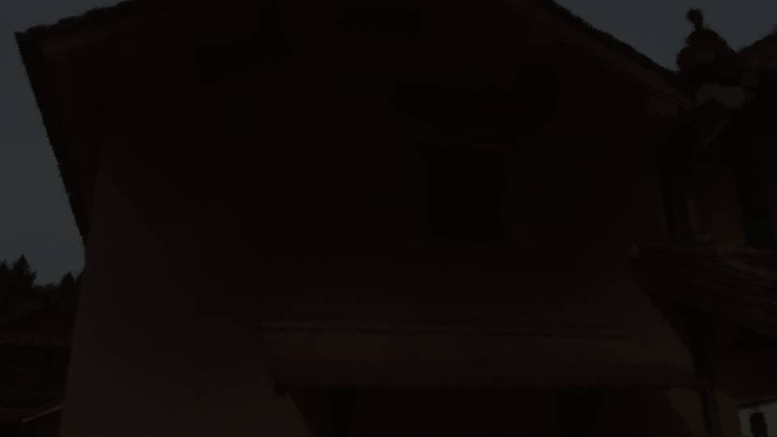
蔵の火事は、2階部分が燃えただけで他に延焼することはなかった。
集落一帯に水でくすぶった燃えカスの臭気が漂っている。
集落一帯に水でくすぶった燃えカスの臭気が漂っている。

私は再び自室に戻された。
今、五島たちが蔵の調査をしているはずだ。
私がこのように隔離されている理由が分かった以上、特に不満はない。
これが最善の方法であり、私の積極的な協力の仕方だ。
今、五島たちが蔵の調査をしているはずだ。
私がこのように隔離されている理由が分かった以上、特に不満はない。
これが最善の方法であり、私の積極的な協力の仕方だ。
それにしても春花たちの帰りが遅い。
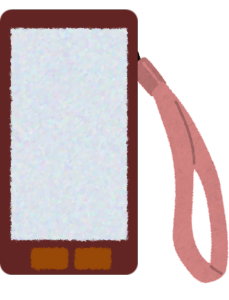
まだ春花からメッセージの返信どころか、既読すらつかない。
春花、無事だよね？ 大丈夫だよね？
ずっと変わりのないメッセージ画面を見つめる。
春花、無事だよね？ 大丈夫だよね？
ずっと変わりのないメッセージ画面を見つめる。
「あの、なつみちゃん？」
廊下からノックと夏菜ちゃんの声。
廊下からノックと夏菜ちゃんの声。
「どうぞ」
先ほどよりも心が落ち着いたせいか、思ったよりも声を張ることができた。
先ほどよりも心が落ち着いたせいか、思ったよりも声を張ることができた。

「よかった、元気そうで」
「元気そう？」
「うん……ずっとここに閉じ込めているの、エリ姉も嫌みたいだから……」
「ねえ、私、どうしてここに閉じ込められているのかな？」
「元気そう？」
「うん……ずっとここに閉じ込めているの、エリ姉も嫌みたいだから……」
「ねえ、私、どうしてここに閉じ込められているのかな？」

「そ、それは、えっと、えっと……」
夏菜ちゃんは私の質問に対し、露骨に狼狽する。
ちょっと意地悪な質問をしたが、私は閉じ込められた理由を知らない体を貫かないといけない。
夏菜ちゃんに対しても、ネクロに対しても、それを貫く。
とは言え、この姿勢を貫くのは決して気分のいいものではない。
ちょっと意地悪な質問をしたが、私は閉じ込められた理由を知らない体を貫かないといけない。
夏菜ちゃんに対しても、ネクロに対しても、それを貫く。
とは言え、この姿勢を貫くのは決して気分のいいものではない。
「あ、あのね、エリ姉が春花ちゃんを探しに行くから、なつみちゃんも一緒に来てほしいって！」
「え！？ ほんとに！？」
「うん、すぐ出発できる？」
「えっと……うん、大丈夫！」
意外な話だった。
一緒に行って大丈夫なのだろうか。
「え！？ ほんとに！？」
「うん、すぐ出発できる？」
「えっと……うん、大丈夫！」
意外な話だった。
一緒に行って大丈夫なのだろうか。
でも、春花が心配なのは私も同じだ。同行を拒否する理由はない。
例え出歩くことが怖くても、春花が戻って来ない方が怖い。
例え出歩くことが怖くても、春花が戻って来ない方が怖い。


「エリ姉！ 連れてきたよ！」
「五島、私にも手伝わせてくれるの！？」
「はい！ 新村先輩を捜索しに行きます！」
ここは1つ、五島にも知らない体をアピールしておいた方がいい。
「五島、私にも手伝わせてくれるの！？」
「はい！ 新村先輩を捜索しに行きます！」
ここは1つ、五島にも知らない体をアピールしておいた方がいい。
「だったら、そこには私と夏菜ちゃんだけで行くよ！
五島は蔵を調べた方がいいんじゃない！？」
五島は私と夏菜ちゃんを2人きりにしたくないはずだ。
また夏菜ちゃんがうっかり口を滑らせる可能性がある。
五島は私と夏菜ちゃんを2人きりにしたくないはずだ。
また夏菜ちゃんがうっかり口を滑らせる可能性がある。

「ダメです！ 3人で行かないと……！」
「なつみちゃん！ 今はエリ姉の言うとおりにした方がいいよ？」
「う、うん……」
これで大丈夫だ。あとは適当に五島に話を合わせ、私の考えを述べていく。
あくまでも、ネクロを騙すためだ。
「なつみちゃん！ 今はエリ姉の言うとおりにした方がいいよ？」
「う、うん……」
これで大丈夫だ。あとは適当に五島に話を合わせ、私の考えを述べていく。
あくまでも、ネクロを騙すためだ。
にしても、やっぱりいい気分ではないな……。
本当にネクロを騙すなんて、正しいのだろうか。
ネクロを騙すことはみんなを騙すこと。
それが本当に解決に結びつくのだろうか。
本当にネクロを騙すなんて、正しいのだろうか。
ネクロを騙すことはみんなを騙すこと。
それが本当に解決に結びつくのだろうか。

「この森を10分くらい進んだところにあるの」
「森って言っても、木がほとんど枯れてる……」
「うん、さっきまでこんなんじゃなかったんだけどな……」
この辺の木々はほとんど立ち枯れている。
集落の中の木々もそんな感じだった。
一体何が起こったのだろう……。
「うん、さっきまでこんなんじゃなかったんだけどな……」
この辺の木々はほとんど立ち枯れている。
集落の中の木々もそんな感じだった。
一体何が起こったのだろう……。
夕方に見た時はたくましい木々が新芽を芽吹かせていたはずだ。
最初は暗くなったから見え方が変わったのかと思ったが、やっぱりそう言うわけでもないようだ。
最初は暗くなったから見え方が変わったのかと思ったが、やっぱりそう言うわけでもないようだ。
「古郡先輩、これはネクロ――死月妖花と言う、この付近一帯を覆う菌類の仕業だそうです。
どうやら、この山の栄養を根こそぎ奪うようです」
「死月妖花……？」
しかし、五島はここで口を閉じてしまった。
なるほど、これ以上は言えないというわけか。
五島はネクロのことを死月妖花と呼んだが、蔵の本で仕入れた知識だろうか。
「死月妖花……？」
しかし、五島はここで口を閉じてしまった。
なるほど、これ以上は言えないというわけか。
五島はネクロのことを死月妖花と呼んだが、蔵の本で仕入れた知識だろうか。
死月妖花はこの辺りに繁殖している菌類――
菌類ってことは、カビとかキノコの仲間ってことだよね？
それで、死月妖花がこの木々の栄養を吸収して枯れてしまったと。
死月妖花が他の植物の養分を横取りする菌類ということ以外、分からない。
五島からもらえる情報はここまで。
それで、死月妖花がこの木々の栄養を吸収して枯れてしまったと。
死月妖花が他の植物の養分を横取りする菌類ということ以外、分からない。
五島からもらえる情報はここまで。
あとは、私が何も知らないふりをして死月妖花を欺き続ければいい。
できれば、五島には私がどこまで知っているかを気づいてもらいたいけど、私の話術ではなかなか難しいな……。
できれば、五島には私がどこまで知っているかを気づいてもらいたいけど、私の話術ではなかなか難しいな……。
「待って」
突然夏菜ちゃんが私たちの前に立つ。
背を向け、じっと周囲をうかがう。
突然夏菜ちゃんが私たちの前に立つ。
背を向け、じっと周囲をうかがう。
「どうしたの？」
「静かに……誰かいる」
「もしかして、新村先輩？」
と、夏菜ちゃんがナイフを両手に取る。
「静かに……誰かいる」
「もしかして、新村先輩？」
と、夏菜ちゃんがナイフを両手に取る。

「誰！？ いるんでしょ！？ 出てきて！」
ナイフを構えた夏菜ちゃんが大声で叫ぶと――。
ナイフを構えた夏菜ちゃんが大声で叫ぶと――。
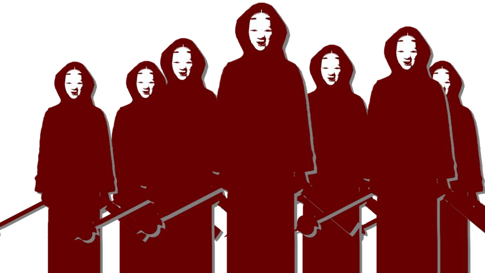
木の後ろや枯れた草の中から、能面と赤装束をつけた人々がもぞもぞと現れた。
空に浮かぶ大きな月が、両手に持つ鉈とメイスを照らしつける。
空に浮かぶ大きな月が、両手に持つ鉈とメイスを照らしつける。
「何？ この人たち……」
「多分、集落の人たちだよ……」
荒田集落の住人！？
さっきまで消火に協力してくれていた人たちが、どうしてこんな物騒な格好を……。
「多分、集落の人たちだよ……」
荒田集落の住人！？
さっきまで消火に協力してくれていた人たちが、どうしてこんな物騒な格好を……。
「夏菜、お客人、すぐに引き返すのだ。ここから先へ行ってはならない」
「どいて！ 春花ちゃんを探さないといけないの！」
春花を探す妨害をしているの？
こんな格好をして、武器まで持って。
春花に何かが起きたに違いない。
「どいて！ 春花ちゃんを探さないといけないの！」
春花を探す妨害をしているの？
こんな格好をして、武器まで持って。
春花に何かが起きたに違いない。
「エリ姉！ なつみちゃん！ 私の後ろに下がって！」
五島が私の腕を引っ張り、夏菜ちゃんの後ろに下がる。
こんな小さい夏菜ちゃんが、大勢の大人を相手にするなんて、そんなの無茶だ！
何とかして彼らをかいくぐり、春花のところへ行く手段はないだろうか。
五島が私の腕を引っ張り、夏菜ちゃんの後ろに下がる。
こんな小さい夏菜ちゃんが、大勢の大人を相手にするなんて、そんなの無茶だ！
何とかして彼らをかいくぐり、春花のところへ行く手段はないだろうか。
「ん……みんな、待って！」
その時、女性の叫び声が住人たちの向こうから聞こえてきた。
春花？ おばさん？
いや、どちらの声でもない。
誰だろうか。
その時、女性の叫び声が住人たちの向こうから聞こえてきた。
春花？ おばさん？
いや、どちらの声でもない。
誰だろうか。
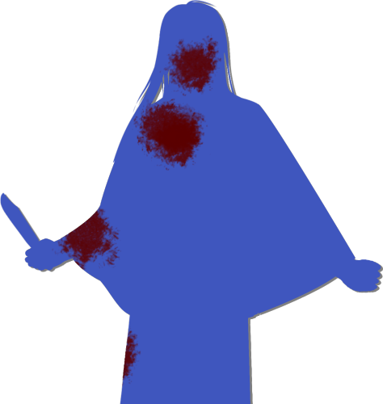
「お姉ちゃん……！」
「チガ姉！」
「…………誰？」
「…………誰？」
そこに現れたのは、汚れたワンピースに泥だらけのポンチョブランケットをまとい、髪もボサボサな女性。
しかも、顔から出血しており、服にも血がついている。
雰囲気や顔の造形を見るに、もともとは美人なのだろうけど、逆にその美形な雰囲気とミスマッチな身なりが何とも不気味だ。
しかも、顔から出血しており、服にも血がついている。
雰囲気や顔の造形を見るに、もともとは美人なのだろうけど、逆にその美形な雰囲気とミスマッチな身なりが何とも不気味だ。
そして何より、その人は血の付いたナイフを握っているのだ。
行方不明になっていた夏菜ちゃんの姉であることは間違いないだろう。
でも、素直にチガ姉の発見を喜べない自分がいる。
例の直感とは違うけど、何か不穏なものを感じる。
行方不明になっていた夏菜ちゃんの姉であることは間違いないだろう。
でも、素直にチガ姉の発見を喜べない自分がいる。
例の直感とは違うけど、何か不穏なものを感じる。
「ん……叔母さんと春花は、豊岳方面の廃屋に行ったわ！
みんなもそこに避難して！」
「お姉ちゃん、でもあそこは……」
「夏菜！ 2人をお願い！ 時間がないの！ ここは私に任せて！」
「わ、分かった！ エリ姉！ なつみちゃん！ 早く！」
そんな私の猜疑心を無視するかのように、夏菜ちゃんが私の手を引っ張り強行突破を試みる。
「夏菜！ 2人をお願い！ 時間がないの！ ここは私に任せて！」
「わ、分かった！ エリ姉！ なつみちゃん！ 早く！」
そんな私の猜疑心を無視するかのように、夏菜ちゃんが私の手を引っ張り強行突破を試みる。
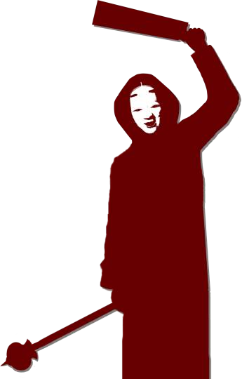
「ま、待て！」
1番前に立っていた住人が鉈を振り上げる。
が、すぐにチガ姉がその住人の前に立ちはだかる。
1番前に立っていた住人が鉈を振り上げる。
が、すぐにチガ姉がその住人の前に立ちはだかる。
「ん……邪魔しないで、私は本気なの。
あの子たちに手を出すなら……
殺す！」
「エリ姉！ 早く！」
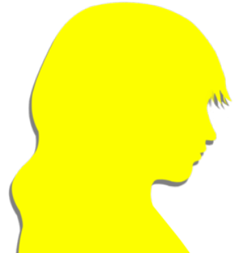
五島は心配なのか、チガ姉の方ばかり見ていて足の動きが遅い。
チガ姉への敵愾心に一瞬駆られたが、私たちを守るためにここへ来たのは間違いなさそうだ。
第一印象に囚われず、チガ姉を信用するのがいいだろう。
チガ姉への敵愾心に一瞬駆られたが、私たちを守るためにここへ来たのは間違いなさそうだ。
第一印象に囚われず、チガ姉を信用するのがいいだろう。
「五島！ しっかりして！」
目線を前に向けさせ、少しでもチガ姉の邪魔にならないよう五島に喝を飛ばす。
夏菜ちゃんと言いチガ姉と言い、本当に1人で立ち向かうつもりなのだろうか。
無茶な姉妹なのか、それとも実力に裏付けられた自信なのか。
無茶な姉妹なのか、それとも実力に裏付けられた自信なのか。

「はあ……はあ……」
急に視界が開け、見晴らしのいい広場に出た。
慣れない砂利道を200メートルダッシュするのはなかなか大変だった。
私と五島はここで足を止め、呼吸を整える。
急に視界が開け、見晴らしのいい広場に出た。
慣れない砂利道を200メートルダッシュするのはなかなか大変だった。
私と五島はここで足を止め、呼吸を整える。
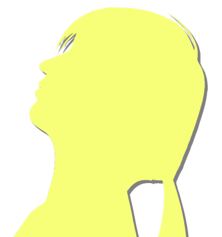
夏菜ちゃんは息切れひとつ見せずに、空を見ている。
チガ姉の廃屋へ行けという指示に対し、夏菜ちゃんは素直に従うようだ。
春花もおばさんもそこにいると言う。
チガ姉の廃屋へ行けという指示に対し、夏菜ちゃんは素直に従うようだ。
春花もおばさんもそこにいると言う。
それなら探す手間は省けるけど、どうして私たちまでそこへ向かわないといけないのだろうか。
私たちが廃屋に行くよりも、春花たちが集落に戻った方がいいのでは？
私たちが廃屋に行くよりも、春花たちが集落に戻った方がいいのでは？
「夏菜ちゃん、廃屋ってあとどれくらい？」
「歩いて15分くらいかな。
でも、夕方にあの辺大雨降ってたから、道がドロドロだと思う。
迷いやすい道だから、私から離れないでね」
「うーん……今から集落に戻るなんて、考えない方がいいよね……？」
「みんながあの様子だと、多分危ないよ」
「うーん……今から集落に戻るなんて、考えない方がいいよね……？」
「みんながあの様子だと、多分危ないよ」
五島は廃屋に行くことの危険性に気づいていないのだろうか。
あるいはそれを見越した上で廃屋に行くと言っているのだろうか。
難しい判断ではあるが、やっぱり春花たちが心配だ。
まずは春花たちと合流することを優先的に考えるべきか。
あるいはそれを見越した上で廃屋に行くと言っているのだろうか。
難しい判断ではあるが、やっぱり春花たちが心配だ。
まずは春花たちと合流することを優先的に考えるべきか。
「とりあえず、その廃屋に行くしかないよね……」
チガ姉の方が事情をよく知っているようだった。
私も五島も『何が呪殺事件の原因か』は分かっていても『今現在何が起きているか』についてはあまり分かっていない。
やっぱり、その面から考えても、廃屋に行くしか……。
チガ姉の方が事情をよく知っているようだった。
私も五島も『何が呪殺事件の原因か』は分かっていても『今現在何が起きているか』についてはあまり分かっていない。
やっぱり、その面から考えても、廃屋に行くしか……。
「エリ姉、行くよ？」
「あ、うん……」
「あ、うん……」
五島はやや下を向きながら歩き出した。
相当頭を捻っているようだ。
相当頭を捻っているようだ。
今の広場は墓地らしく、崖沿いの道を通って渓流、そして豊岳方面への道、廃屋へと向かう。
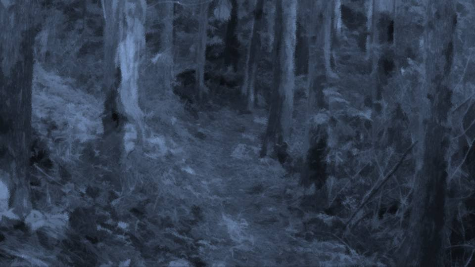
春花たちもこの道を通って廃屋に行ったのだろうか。
地下のミイラ探しはどうなったのだろうか。
そもそも、どうしてチガ姉が春花たちの行方を知っているのだろうか。
廃屋へ行くことに、何の意味があるのだろうか。
ここへ来て、色々と疑問が湧いてくる。
地下のミイラ探しはどうなったのだろうか。
そもそも、どうしてチガ姉が春花たちの行方を知っているのだろうか。
廃屋へ行くことに、何の意味があるのだろうか。
ここへ来て、色々と疑問が湧いてくる。
廃屋へ行くのは私たちだけでいいのか、それともエリカちゃんや幸太郎さんも連れてくるべきなのか。
私なりに考えてみたいが、五島と意見交換をすることはできない。
1度私の頭の中でだけ完結させ、時期を見て、考えをすり合わせることになるのだろうか。
というか、私はいつまで知らないふりをしていればいいのだろう……。
私なりに考えてみたいが、五島と意見交換をすることはできない。
1度私の頭の中でだけ完結させ、時期を見て、考えをすり合わせることになるのだろうか。
というか、私はいつまで知らないふりをしていればいいのだろう……。
こんな普通の意思疎通もできないようじゃ、みんなが結束することも難しい。
私が死月妖花を騙すためにみんなを騙すのは、本当に正しいのだろうか。
私の判断、正しいのだろうか。
ついに五島にもそのことに気づいてもらえなかった。
であれば――。
私が死月妖花を騙すためにみんなを騙すのは、本当に正しいのだろうか。
私の判断、正しいのだろうか。
ついに五島にもそのことに気づいてもらえなかった。
であれば――。
と、下を向いて歩いていた五島が急に足を止める。

「五島、どうしたの？」
「エリ姉？」

「古郡先輩、夏菜ちゃん、2人だけで廃屋に向かってください。
私、まだやることがあるんです！」
「ちょ、五島！」
五島は180度方向を変え、墓地広場の方へ走り去ってしまった。
五島は180度方向を変え、墓地広場の方へ走り去ってしまった。
「なつみちゃん待ってて！ エリ姉捕まえてくる！」
「待って！」
走り出そうとした夏菜ちゃんの腕をつかむ。
走り出そうとした夏菜ちゃんの腕をつかむ。
「待って夏菜ちゃん、五島はこのままだとダメだと思ったんだよ。
だから、ここは……」
「でも！ エリ姉があいつらに襲われたら……！」
「でも！ エリ姉があいつらに襲われたら……！」
「大丈夫、その時はチガ姉が守ってくれるでしょ？」
「…………」
と、夏菜ちゃんの腕から力が抜けていく。
いや、腕ばかりか、肩からも、そして全身から力が抜けているような。
と、夏菜ちゃんの腕から力が抜けていく。
いや、腕ばかりか、肩からも、そして全身から力が抜けているような。
「どうしたの？」
「なつみちゃん…… お姉ちゃんは、もうダメかもしれない」
「夏菜ちゃん、大丈夫だよ。チガ姉は怪我してたみたいだけど、そんな簡単に――」
「違うの！ みんなにやられるって意味じゃなくて……。 そうじゃなくて……。
「なつみちゃん…… お姉ちゃんは、もうダメかもしれない」
「夏菜ちゃん、大丈夫だよ。チガ姉は怪我してたみたいだけど、そんな簡単に――」
「違うの！ みんなにやられるって意味じゃなくて……。 そうじゃなくて……。
いいから、早く廃屋に行こう」
夏菜ちゃんは私の手を引いて歩き出した。
夏菜ちゃんの手の力は強かった。
私まで走り去ってしまわないように、ギュッと握っているのだろうか。
それとも、やっぱり少し怖いのだろうか。
夏菜ちゃんの手の力は強かった。
私まで走り去ってしまわないように、ギュッと握っているのだろうか。
それとも、やっぱり少し怖いのだろうか。
「なつみちゃん、私ね……
実は今朝……。
あ！」
「ん？」
「ん？」

「な、何でもない！ 何でもない！ 何でもないよ！」
急に話をやめてしまった夏菜ちゃん。
言いかけて、焦るように口を閉じてしまったが、もしかして……。
急に話をやめてしまった夏菜ちゃん。
言いかけて、焦るように口を閉じてしまったが、もしかして……。
「私に話したら、五島に怒られる？」
「あ、あのあの、えっと、えっと……」
「私の聞いたことが、死月妖花にばれちゃうから？」
「あ、あのあの、えっと、えっと……」
「私の聞いたことが、死月妖花にばれちゃうから？」
「知ってたの……？」
「うん、なんとなくね」
「うん、なんとなくね」
今の私の発言は、死月妖花にも私の気づきを知らせることにもなる。
当初私は、ずっと黙っているつもりだった。
できれば嘘を混ぜて死月妖花を騙し、こちらが有利になれるようにと思っていたけど、みんなも騙すことになる。
しかしそれでは、私たちの行動や考えがちぐはぐになり、余計な混乱を招いてしまうのではないかと思った。
当初私は、ずっと黙っているつもりだった。
できれば嘘を混ぜて死月妖花を騙し、こちらが有利になれるようにと思っていたけど、みんなも騙すことになる。
しかしそれでは、私たちの行動や考えがちぐはぐになり、余計な混乱を招いてしまうのではないかと思った。
今でさえ、みんなの行動や考えが分からない状態なのに、それを余計にかき乱すのは危険だ。
しっかりと意思統一して、団結して立ち向かった方が、解決の糸口が見えるのではないかと―― そう思ったのだ。
身勝手な判断かもしれないが、こんな状態で死月妖花のように大きな存在に立ち向かえるとも思えない。
しっかりと意思統一して、団結して立ち向かった方が、解決の糸口が見えるのではないかと―― そう思ったのだ。
身勝手な判断かもしれないが、こんな状態で死月妖花のように大きな存在に立ち向かえるとも思えない。
1人で立ち向かおうとすると、チガ姉のように行方不明になったり、血だらけになりながら戦ったりしなくてはならない。
みんなが言ってくれた――信じなさいって。
みんなが言ってくれた――信じなさいって。
「じゃあ、言うけど……あの……」
夏菜ちゃんが言いかけて止めた話の続きだろうか。
夏菜ちゃんが言いかけて止めた話の続きだろうか。
「私、今朝……
お姉ちゃんを見つけてたの」
「え？」
「お姉ちゃん、廃屋にいたの」
今朝、チガ姉が廃屋にいた？
何を言っているの、この子は……。
「え？」
「お姉ちゃん、廃屋にいたの」
今朝、チガ姉が廃屋にいた？
何を言っているの、この子は……。
「じゃあ、行方不明っていうのは……？」
「私が見つけてた。 だけどお姉ちゃん、ずっと変なこと言っていたの」
「私が見つけてた。 だけどお姉ちゃん、ずっと変なこと言っていたの」
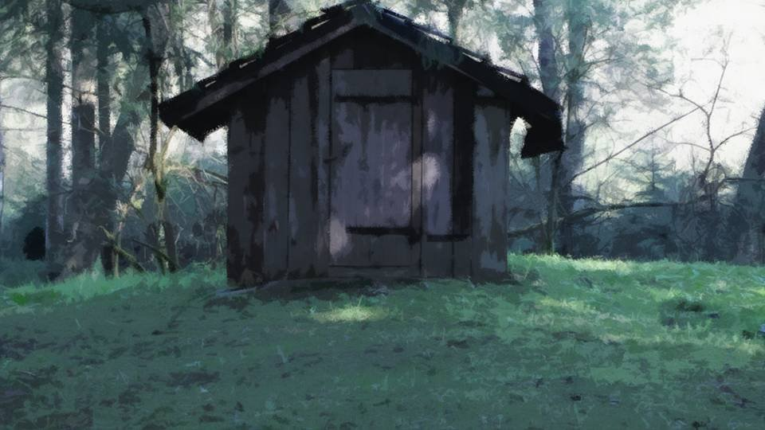
私が今朝、1人で廃屋の辺りを探していた時、血の臭いがしたの。
廃屋の中から、まだ新しい血の臭い。
もしかしたらお姉ちゃんがいるんじゃないかと思って……。
廃屋の中から、まだ新しい血の臭い。
もしかしたらお姉ちゃんがいるんじゃないかと思って……。
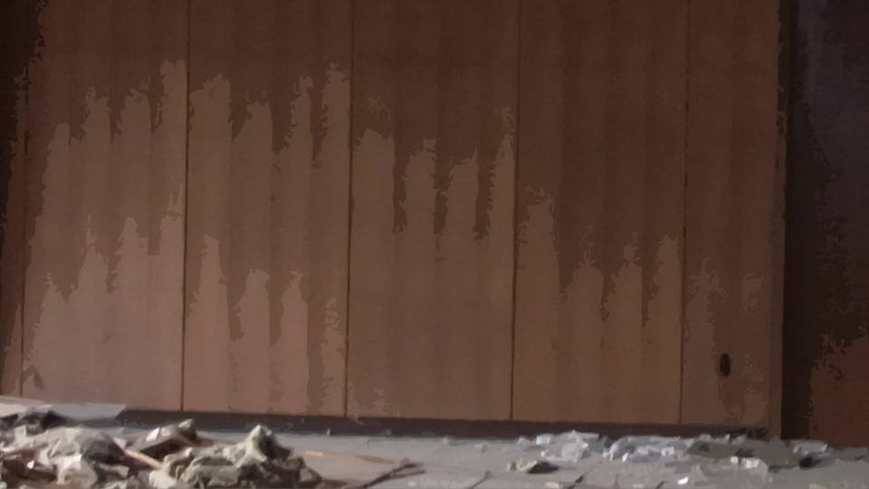
中に入ったら、やっぱりお姉ちゃんがいたの。
でも、隅で横になったまま丸まって、壁の方を向いて耳をふさいでて……。
よく聞いたら、ずっと変なことをつぶやいてたの。
でも、隅で横になったまま丸まって、壁の方を向いて耳をふさいでて……。
よく聞いたら、ずっと変なことをつぶやいてたの。
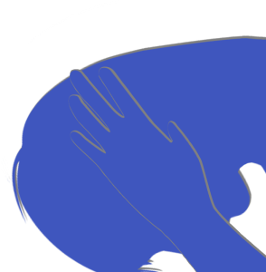
「死にたくない……死にたくない……！ 勝てるわけない！
もう降参した方がいいよ……！ みんな桜になればいい！」
「あの、お姉ちゃん――」
「みんな私の代わりに死んでよ……！ 私だけでも助けてよ……！」
「あの、お姉ちゃん――」
「みんな私の代わりに死んでよ……！ 私だけでも助けてよ……！」
そんなことをずっと耳をふさいだままつぶやいていたの。
私、ちょっと怖くなっちゃって……。
私、ちょっと怖くなっちゃって……。
「もしかして、チガ姉をそのまま……」
「どうしたらいいか、分からなかった。 お姉ちゃんを連れて行った方がいいと思ったけど……」
声をかけられず、そのまま廃屋に放置してきたと。
姉妹であっても、震えながら「みんな死ね」なんて言う人を見たら、そりゃちょっと不気味だよね。
まして、夏菜ちゃんみたいに小さい子が……。
「どうしたらいいか、分からなかった。 お姉ちゃんを連れて行った方がいいと思ったけど……」
声をかけられず、そのまま廃屋に放置してきたと。
姉妹であっても、震えながら「みんな死ね」なんて言う人を見たら、そりゃちょっと不気味だよね。
まして、夏菜ちゃんみたいに小さい子が……。
「でも……
でも、ほんとのこと言うと……
お姉ちゃんが帰ってくるのが怖かったの」
「怖いこと言っていたから？」
「それもあるけど…… お姉ちゃんはね、パパかおばあちゃんが悪いことしているって思ってるの。 もし、お姉ちゃんが戻ってきたら、パパたちが逮捕されちゃうかもしれないから……」
「怖いこと言っていたから？」
「それもあるけど…… お姉ちゃんはね、パパかおばあちゃんが悪いことしているって思ってるの。 もし、お姉ちゃんが戻ってきたら、パパたちが逮捕されちゃうかもしれないから……」
「そうだったんだ……」
「ごめんなさい！ 私、昨日からお姉ちゃんが怖かったの！ パパやおばあちゃんが犯人だと言って色々調べたり、今朝はみんな死ねなんて言ってたり……。 お姉ちゃん、変になっちゃったんじゃないかと思って……！」
「ごめんなさい！ 私、昨日からお姉ちゃんが怖かったの！ パパやおばあちゃんが犯人だと言って色々調べたり、今朝はみんな死ねなんて言ってたり……。 お姉ちゃん、変になっちゃったんじゃないかと思って……！」
家族を疑い、そしてみんなの死を望む独り言。
そんな人が家族の中にいたらどれほど恐ろしいか―― 小学生に冷静な判断を求めるのは酷だったようだ。
夏菜ちゃんは後悔してるようだけど、それでも今、どうすべきかも分かっていないだろう。
そんな人が家族の中にいたらどれほど恐ろしいか―― 小学生に冷静な判断を求めるのは酷だったようだ。
夏菜ちゃんは後悔してるようだけど、それでも今、どうすべきかも分かっていないだろう。
「とりあえず、チガ姉は生きていたんだから、よかったよ。
それよりも、これからどうするかを考えようよ」
「うん……
「うん……
私、もう卑怯なことしない！
もう、嘘つかないから……！」
思っていた以上に、みんなの心はバラバラだったようだ。
こんなことでは、解決するものも解決しない。
呪殺事件でこの集落の人たちは互いに不信感を抱いているのだから、なおさらだ。
思っていた以上に、みんなの心はバラバラだったようだ。
こんなことでは、解決するものも解決しない。
呪殺事件でこの集落の人たちは互いに不信感を抱いているのだから、なおさらだ。
もしかすると、私たちは集落の人たちに対して大きな誤解をしているのかもしれない。
先ほどは私たちを襲うようにも見えたが、全く別の意図があった可能性だって否定できないのだ。
わざわざあんな格好をして集落に戻れと。
私たちの身を案じてくれたとも解釈できる。
先ほどは私たちを襲うようにも見えたが、全く別の意図があった可能性だって否定できないのだ。
わざわざあんな格好をして集落に戻れと。
私たちの身を案じてくれたとも解釈できる。
それをチガ姉を含めた私たちが勘違いしていたとしたら――。
やっぱり、死月妖花の影におびえて騙し合うなんて間違ってる！
隠し事も、騙すことも、この事件の解決の方法としてはあまりにもナンセンスだ。
むしろ、これまでの呪殺事件は、互いの不信感から助長されてしまったとも言えるのではないだろうか。
その負の連鎖は、今ここで断ち切らないといけない。
やっぱり、死月妖花の影におびえて騙し合うなんて間違ってる！
隠し事も、騙すことも、この事件の解決の方法としてはあまりにもナンセンスだ。
むしろ、これまでの呪殺事件は、互いの不信感から助長されてしまったとも言えるのではないだろうか。
その負の連鎖は、今ここで断ち切らないといけない。
「夏菜ちゃん、私たちがすべきは、みんなの心をつなぎとめること。
きっとみんな、お互いを誤解しているんだよ。
ちゃんと話し合えば、きっと呪殺事件だって止められるよ！」
「なつみちゃん……。
「なつみちゃん……。

やっぱりなつみちゃん、すごいね！
なつみちゃんって、絶対にへこたれないってみんな言ってたもん！」
「そんなことないよ、私なんて、そんなに強くないし……」
「だったら、みんなが持っていない大事なものをなつみちゃんが持っているんだよ。 だからみんな、なつみちゃんのことが大好きなんだよ！」
「だったら、みんなが持っていない大事なものをなつみちゃんが持っているんだよ。 だからみんな、なつみちゃんのことが大好きなんだよ！」
私の長所は、強いメンタルってよく言われている。
でも、さっきエリカちゃんの胸で泣いたように、大して強いわけじゃない。
だけど夏菜ちゃんの一言でしっくりくる回答が得られた気がする。
でも、さっきエリカちゃんの胸で泣いたように、大して強いわけじゃない。
だけど夏菜ちゃんの一言でしっくりくる回答が得られた気がする。
みんながバラバラになりそうな時に、私はつなぎとめることができるのだ。
これも意識しているわけじゃないけど、みんなが別々の方を向いてバラバラになっているのが、嫌というだけかもしれない。
そんな時は、少しでもみんなをつなぎとめられるよう働きかける。
これも意識しているわけじゃないけど、みんなが別々の方を向いてバラバラになっているのが、嫌というだけかもしれない。
そんな時は、少しでもみんなをつなぎとめられるよう働きかける。
私にできるのは死月妖花を騙すことではない。
そんなこと、きっと死月妖花だって先回りして対策を練っているはずだ。
みんなの意識を1つにして立ち向かうことこそが、死月妖花の不意を突く1番の良作なのだ。
そんなこと、きっと死月妖花だって先回りして対策を練っているはずだ。
みんなの意識を1つにして立ち向かうことこそが、死月妖花の不意を突く1番の良作なのだ。
Read ✓ Next in this arc →